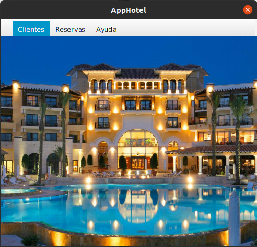
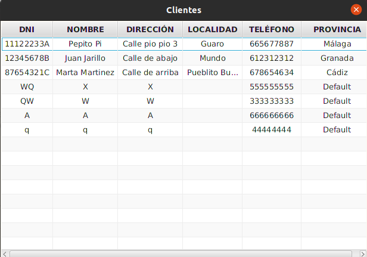
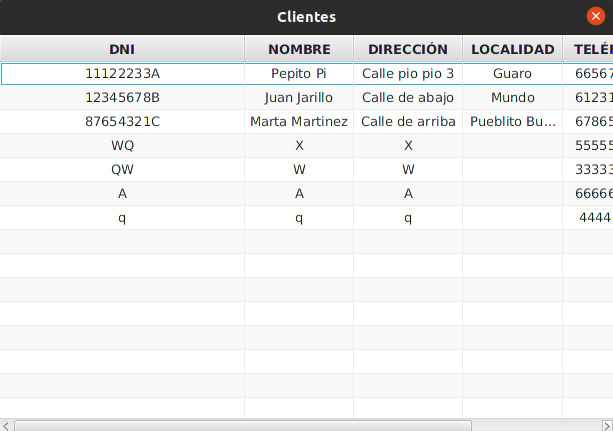
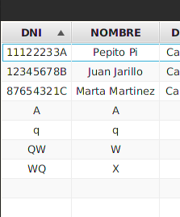
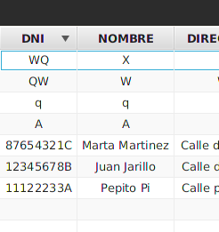
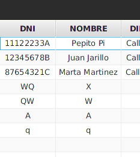
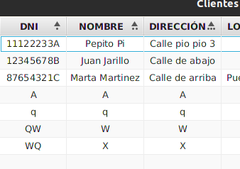
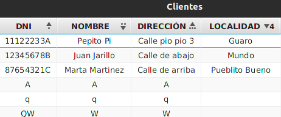

Base de Datos: Manual de usuario
La aplicación cuenta con una ventana para visualizar los clientes insertados en la base de datos, es decir, los clientes que han reservado alguna vez alguna habitación, o el salón.
Para acceder a esta ventana deberá hacer click en la opción de menú llamada “Clientes”, se desplegará la opción “Consultar Clientes”.

Al hacer click en esta opción de menú, se mostrará la siguiente ventana.

Como se puede ver en la imagen anterior, se despliega el listado de los clientes registrados en la base de datos del hotel.
1. Ajustar ancho de columna
Si no se visualiza alguna columna completamente, se puede modificar el ancho de las mismas haciendo click en el margen de la columna y arrastrando el ancho hasta que los datos se visualicen correctamente. Nótese que si excedemos el ancho de la ventana, disponemos de una barra de scroll horizontal con la que podemos visualizar de forma completa los datos.

2. Ordenación de registros (columna simple)
Al hacer click en el encabezado de alguna columna, se ordenan los registros de la base de datos de forma ascendente, si se vuelve a hacer click la ordenación se produce de forma descendente, y por ultimo si se vuelve a hacer click, se desactiva la ordenación. (Por defecto los registros está ordenados de forma ascendente en base al DNI de los clientes).
Primer click:

Segundo click:

Tercer click:

3. Ordenación de registros (columnas múltiples)
Si se mantiene presionada la tecla Shift y se pulsa sobre el encabezado de varias columnas, la ordenación se produce primero por la primera columna seleccionada, después por la segunda, y así sucesivamente.

Como podemos ver, primero se ordena de forma ascendente por DNI (primer criterio de ordenación → · ), si coinciden los DNI (algo imposible ya que el DNI es único de cada persona), se ordena en base al segundo criterio de ordenación (Nombre → ·· ), y si este coincide también, se ordena en base al tercer criterio seleccionado (Dirección → ··· ).
También es posible ordenar alternando entre las formas de ordenación (ascendente – descendente). Para ello se debe mantener presionada la tecla Shift, igual que antes, pero hacer click dos veces en el campo que se quiera ordenar de forma descendente.

En la imagen de ejemplo, se ha mantenido presionada la tecla Shift y se ha hecho un click sobre DNI, dos click sobre Nombre, un click sobre Dirección, y dos clicks sobre Localidad.
4. Registros con campos incompletos
Algunos campos siempre estarán completos, como DNI, Nombre y Dirección. Pero otros, en contraposición, dependerá de la reserva realizada por el cliente, así, si el cliente realiza una reserva de habitación tendrá completos los campos Localidad y Provincia, y tendrá vacío el campo Teléfono, y si realiza una reserva del salón, tendrá completo el campo Teléfono, y vacíos los campos Localidad y Provincia.
Si el mismo cliente realiza una reserva diferente a la que realizó en el pasado, se podrán completar estos campos desde la pantalla de reserva apropiada.
5. Errores en la Base de Datos
Si al iniciar la aplicación no se cargan los registros en la pantalla de visualización de la base de datos, o no se puede registrar algún cliente, es muy probable que estén surgiendo problemas con la base de datos incrustada en la aplicación. Para solventar este error póngase en contacto con el administrador del sistema, y deberá redirigirlo a la siguiente página del manual: BD Hotel manual de Administrador.